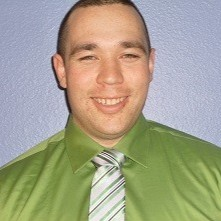

About Me
I was born in Santa Monica California. i was raised all over Western Washington, mainly north of Seattle. i am 31 years old and an avid sports fan.I am a 7 year United States Army veteran. In the military I spent my whole 7 years in Fire Support. Fire support is where I would call in artillery fire and close air supports on a given location to help protect our troops in contact. It was an awesome experiece to be in the military. I joined the military right after High-school.
If I had to make any changes to my life as of right now I would say, I wouldn't change serving in the military but just the places I got stationed after my deployments. I was stationed in Fort Riley, Kansas from 2007 to 2012 as part of The Big Red One The First Infantry Division. After my two deployments with the Big Red One. I got stationed at Fort Lewis, Washington with The 17th Field Artillery Brigade. I had the option of 3 places and I chose to return home. So if I could change my decision I would of chose going overseas to Germany and explore all of Europe.
I am married to the most beautiful wife and have been for 10 years now. I have 1 son who is 5 years old. Together we create the most perfect family. we have two dogs and one cat.